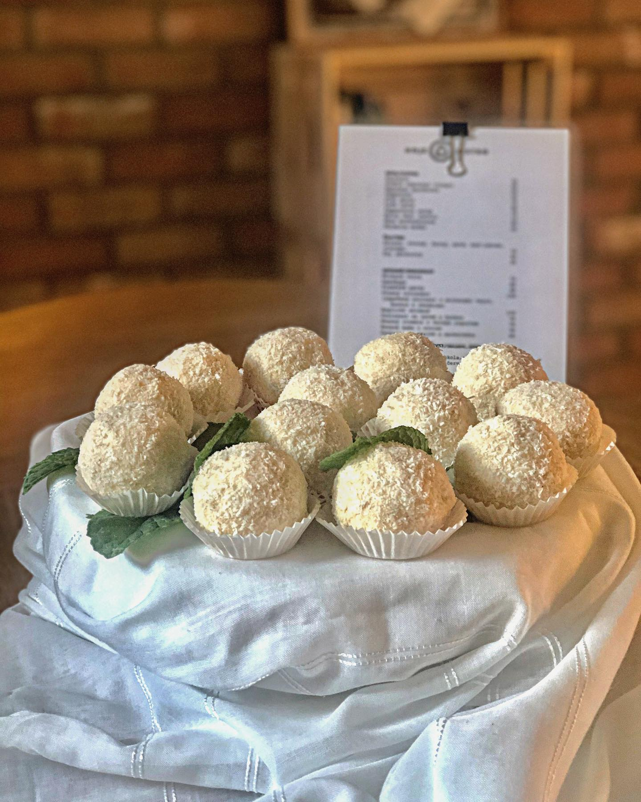

Frankfurtská polievka podľa @mojebistro — Normy Jedál
Krásne ráno
Dnes je DD tak sa s nimi stavte u nás na niečo dobré. Máme pre vás pripravené domáce rafaello, kokosový cheesecake, tiramisu, čoko muffin a k obedu bude ďeťmi milivaná #frankfurtskapolievka a vepřové stroganof s ryžou.
KONIEC HLÁSENIA PRIATELIA 🔇 .
.
.
#foodphotography #foodblogger #foodgasm #foodcoma #foodstagram #foodlover #foodstyling #foodoftheday
#bistro #mojebistro #nasebistro #cake #cheesecake #rafaello #rafaellocake #takeaway #zachransvojpodnik